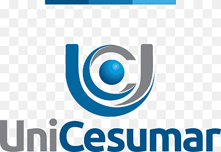
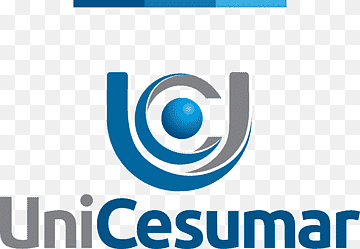
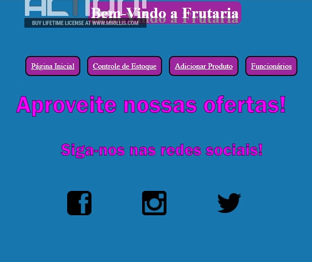
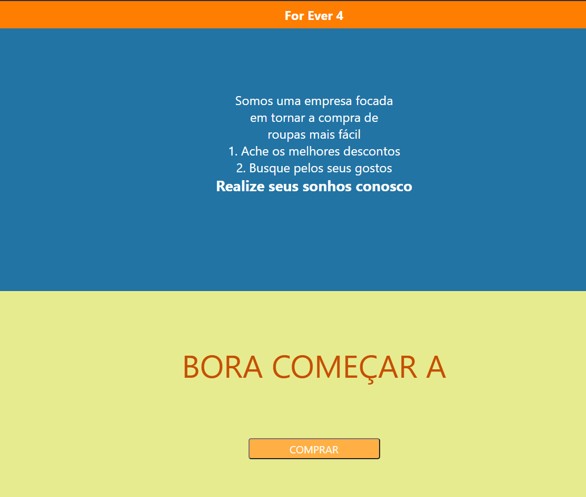

Olá, seja bem-vindo à minha página! Meu nome é Matheus Alonso.
Sou estudante no curso de Dev FullStack da Labenu, onde procuro ampliar meus conhecimentos e me tornar um profissional da área de TI. Sou alguém de muita dedicação, e adoro a possibilidade de colaborar na melhoria do mundo.
MINHAS FORMAÇÕES
INSTITUIÇÕES DE ENSINO
 

- Labenu - Curso Dev FullStack (atual)
- Unicesumar - Analise e desenvolvimento de Sistemas (EAD) (atual)
EXPERIÊNCIAS PROFISSIONAIS
- Sem Expêrincia Profissional
PROJETOS REALIZADOS

Clique para acessar!
Bugfixes

Clique para acessar!
Subir
HABILIDADES
Hard Skills
- Inglês Intermediário: boa leitura, e razoável escrita e conversação;
- HTML, CSS e JS: conhecimentos básicos;
Soft Skills
- Considero-me uma pessoa versátil e adaptativa, o que é um fator muito importante para a dinâmica veloz do mundo atual.
- Durante minhas experiências profissionais desenvolvi o gosto e a percepção pelo trabalho coletivo, que nos dias atuais é ferramenta essencial para o pleno desenvolvimento dos serviços de forma eficiente.
- Tenho uma natureza comunicativa, sendo alguém que interage facilmente em diversos ambientes.
- Sou alguém de determinação sólida, visto que quando me coloco em algo, me dedico até os meus limites, sempre tentando superá-los.